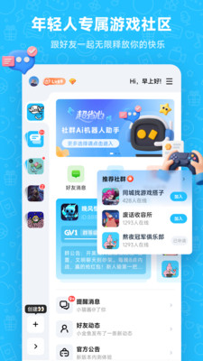

Whack 入门攻略：从零开始搭建你的第一个 AI 社群
Whack 是一款自带 AI 机器人的社群聊天工具，内置点歌、福袋、智能问答等互动玩法。本文带你从下载安装到第一次跑通 AI 管群，零基础也能上手。
这篇能带你从完全不懂到用起来——不需要任何社群管理经验，跟着走一遍就能把 Whack 装起来、建一个群、让 AI 机器人帮你管。
它到底是干嘛的？（一个生活化类比讲明白）
想象一下你开了一家线下奶茶店，来了一波朋友在店里聊天。普通微信群就像一张桌子——大家围坐、自由聊、但没人管秩序、也没人主动给新人倒水。Whack 不一样，它相当于给你配了一个兼职店长：有人（AI 机器人）帮你回答常见问题、帮你维护群里的秩序、甚至还能组织点歌、开奖这种小游戏让气氛热起来。
来Whack官网看一眼介绍就明白，Whack 不是单纯的聊天工具——它从一开始就是瞄准「社群运营」这个场景做的，自带 AI 管群能力。群主可以用 AI 机器人当智能客服、知识沉淀库和气氛调节员。会员体系里有嗨币可以发虚拟礼物，福袋功能让群里随时能开奖。说人话：它是给想认真玩社群的人准备的工具，不是随便加个好友聊两句就行的那种。
五分钟上手：从下载到第一次跑通
别急着到处点，跟着下面走，五分钟以内你就能把 App 装好、建一个群、让 AI 机器人上岗。
第一步：装 App、注册账号。从官方下载拿安装包，或者去应用商店搜 Whack 下载。打开后按提示注册手机号就行——目前公开资料里没看到需要邀请码，普通用户直接能注册。
第二步：进首页、找「创建社群」按钮。首页通常会给你推荐一些现成的社群（比如游戏公会、兴趣社群），但我们先不管——点底部或右上角的创建入口，给自己的社群起个名字、选个头像、挑一个分类（比如游戏、音乐、学习随你）。建好之后你就是群主了。
第三步：进群设置、打开 AI 机器人。进入你刚建的群，找群设置里的「AI 机器人」入口。第一次进来它会让你确认要不要启用——启用之后 AI 就正式上岗了。它默认会管一些基础行为，比如新人进群自动欢迎、关键词自动回复之类的。
第四步：拉几个朋友进来测试。把群链接或者群号发给朋友，让他们进来说两句话。你会发现 AI 已经在干活了——新人进群自动发欢迎语、有人问重复问题时 AI 会主动搭话。到这里就算跑通了。

上手后先玩这三个功能（新手最值得碰的）
跑通只是开始。下面三个功能是新手阶段最值得先去碰的——你会明显感受到「这东西和普通聊天工具不一样」。
AI 点歌：游戏等时间的时候拉气氛
打开群设置 → AI 机器人 → 互动插件，把「点歌」开关打开。然后让群友在聊天里发「点歌 + 歌名」，AI 会在群里推送歌曲播放链接或者内置播放器卡片。多人同时点歌还能排成队列 AI 依次推。
你会看到什么：群里会出现一排点歌卡片，AI 依次播放、每张卡片带歌曲封面和播放按钮。这意味着什么：副本排队、匹配等待这种碎片时间不用再尴尬沉默了——点一首歌放着，群里瞬间就有声音和画面，气氛完全不一样。
福袋开奖：随时能搞的小活动
同样在互动插件里，把「福袋」打开。创建福袋时可以设置倒计时时间、奖品（积分或者嗨币都行，群主自己定）、参与门槛（全群可参与或者签到成员才能参与）。设好之后 AI 会在群里挂一个倒计时，到点自动开奖、把中奖者艾特出来。
你会看到什么：群聊里出现一张带倒计时的福袋卡片，时间一到卡片自动变成开奖结果、中奖者被标红。这意味着什么：社群里最容易冷场的时候（比如周末下午、没人说话的时候），发一个福袋就能把人拉回来抢——这不是多大的奖励，但就是能让人愿意留在群里、愿意互动。
自定义表情贴纸：让群聊有自己的风格
在聊天输入框附近找表情/贴纸入口（位置因版本略有差异，通常在键盘上方），点开就能按分类浏览。Whack 从基础 emoji 到动态表情、mini 贴纸、节日限定主题，层级分得很清楚——普通成员用基础层和动态层，贵族身份（绑 VIP/SVIP 会员）还有专属特效表情。完整的表情层级和会员关联关系可以在Whack文档里查到。
你会看到什么：打开表情面板后可以切换「常用」「动态」「mini 贴纸」「贵族专属」几个标签页，选了之后直接发到群聊里。这意味着什么：统一一套气泡主题再配风格接近的贴纸包，你的群和别人的群在视觉上立刻就能区分开来——别小看这个，长期运营下来这就是社群的「品牌感」。
小白的三个常见疑问
问：免费版够不够用？
够。Whack 下载本身是免费的，AI 机器人管群、点歌、福袋这些核心互动功能也都是免费的。会员（VIP/SVIP）主要是增值权益——贵族身份特效、特权表情、部分插件高级功能。不买会员一样可以正常建群、管群、组队、用 AI 问答。对于普通玩家和小群群主来说，免费版已经能把群管得很好。
问：忘了青少年模式密码怎么办？
青少年模式开启后会隐藏会员和嗨币购买入口、AI 互动插件也会做限制，这是给家长的保护开关。如果忘了关闭密码，从 v1.2.11 版本起 Whack 上线了官方客服对话入口——直接在 App 里找客服，走身份验证流程就能重置密码。别慌，不是卡死了就打不开。
问：互动插件全开会不会太吵？
会。插件开得多容易刷屏，新人进来看到一堆卡片会混乱，管理员也得多一份精力维护。建议根据群的核心定位决定数量：攻略群以 AI 问答为主、只开签到和福袋两个辅助；娱乐群可以全开；混合型群先开点歌 + 福袋，跑两周看看效果再加。别上来就把所有插件打开，反而把最核心的聊天淹没了。
写在最后
Whack 最有意思的地方在于，它不是让你去学一堆复杂配置、也不是让你买一堆会员才能用好——核心的 AI 管群和互动功能，免费版就能跑起来，五分钟上手就能看到效果。先建一个群、把 AI 打开、拉几个朋友进来试试点歌和福袋，感受一下「群里有个 AI 助手帮你」是什么感觉。
玩熟了之后，可以去深入了解一下它的知识库功能——让 AI 记住群里的常见问题、新人进来问的时候 AI 能直接答，这个才是 Whack 真正拉开和普通聊天工具差距的地方。
顺手说一句，这套 Whack 的资料在GitHub、Gitee 和 GitCode 三个仓库都有同步，国内访问的话直接走 Gitee 或 GitCode 更方便。